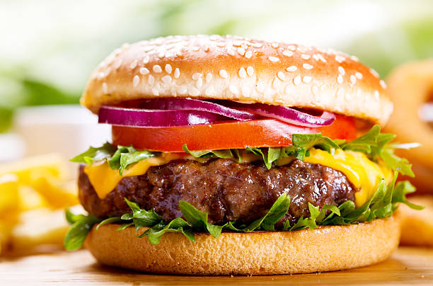

Prep:10 minutes
Cook:20 minutes
Serves:4
Ingredients
- 500g Ground beef
- 4 Burger Buns
- 4 Cheese Slices
- lettuce,Tomato,Onion
- Sailt,Pepper,Garlic Powder
- Ketchup and Mayonnaise
Instructions
- Mix beef With salt ,pepper and garlic Powder
- Cook patties on a hot pan for 4-5 minutes each side
- Add cheese on top in the last minutes to melt
- Toast the buns lightly
- Assemble:Bun+Sauce+Lettuce+Patty+Tomato+0nion+Bun
- Serve Hot and enjoy!
Chef Tip:Don't press the patty while cooking.It keeps it juicy.